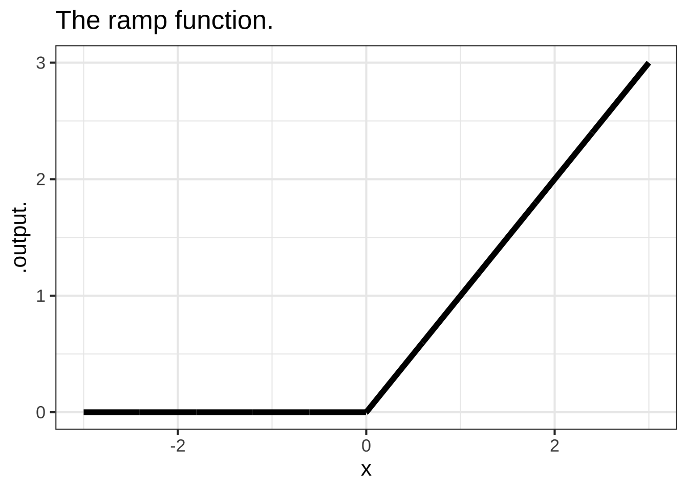

Chapter 19 Continuity and smoothness
You’ve seen how various properties of a functions—whether it is monotonic, how it slopes, whether it is concave up or down (or not at all), curvature, etc.—can be related to the first and second derivatives of the function.
It’s time to introduce two new ways of describing functions that can be useful for determining whether a given function is fit for the purpose intended for it. These are continuity and smoothness.
19.1 Continuity
The intuition behind continuity is simple: If you can draw the graph of a function without lifting the pencil from the paper, the graph is continuous.
Continuity can be an important attribute of a modeling function. Often, we are modeling phenomena where a small change in input is expected to produce a small change in output. For instance, if your income changes by one penny, you would expect your lifestyle not to change by much. If the temperature of an oven changes by 1 degree, you don’t expect the quality of the cake you are baking to change in any noticeable way.
All of our basic modeling functions are continuous over their entire input domain (with one exception). To illustrate discontinuity we’ll consider piecewise functions, as introduced in Chapter 13. The Heaviside function, graphed in Figure ?? is discontinuous.

Drawing the graph of the Heaviside function \(H(x)\) involves lifting the pencil at \(x=0\).
In contrast, the piecewise ramp function (Figure ?? is continuous, you don’t need to lift the pencil from the paper in order to draw the ramp function.

Imagine that you were using a Heaviside function, say \(H(W-20)\), as a model of plant growth as a function of the amount of water (in cc) provided each day. The model implies that if you provide 20.001 cc of water, the plant will thrive. But if you are stingy, and provide only 19.999 cc of water, the plant will die. In other words, a very small change in the input can lead to a large change in the output.
Common sense suggests that a change of 0.002 cc in the amount of water—that’s a small fraction of a drop, 2 cubic millimeters of volume, is not going to lead to a qualitative change in output. So you might prefer to use a sigmoidal function as your model rather than a Heaviside function.
On the other hand, sometimes a very small change in input does lead to a large change in output. For instance, a model of the hardness of water as a function of temperature sensibly would include a discontinuity at \(32^\circ\)F, the temperature at which water turns to ice.
One of author Charles Dicken’s famous characters, Mr. Macawber, described the relationship between income, expenditure, and happiness this way:
"Annual income 20 pounds, annual expenditure 19 [pounds] 19 [shillings] and six [pence], result happiness. Annual income 20 pounds, annual expenditure 20 pounds ought and six, result misery."
Macawber was referring to the common situation in pre-20th century England of putting debtors in prison, regardless of the size of their debt. Macawber statement suggests he would model happiness as a Heaviside function \(H(\text{income}- \text{expenditure})\).
Whenever the output of a function is a yes-or-no value, you can anticipate that a model will involve a discontinuous function.
19.2 Smoothness
Smoothness is a different concept than continuity, although the two are related. Most simply, any discontinuous function is not smooth at any input where a discontinuity occurs. But even the continuous ramp function is not smooth at the start of the ramp. Intuitively, imagine you were sliding your hand along the ramp function. You would feel the crease at \(x=0\).
A function is not smooth if the derivative of that function is discontinuous. For instance, the derivative of the ramp function is the Heaviside function, so the ramp is not smooth at \(x=0\).
All of our basic modeling functions (with one exception!) are smooth everywhere in their domain. In particular, the derivatives of the basic modeling functions are continuous, as are the second derivative, third derivative, and so on down the line. Such functions are called C-infinity, written \(C^\infty\). The superscript \(\infty\) means that every order of derivative is continuous.
For piecewise functions, it can be useful to consider other orders of smoothness. For example \(C^0\) means that the function is continuous but its derivative is not, as with the ramp function. Figure 19.1 shows a \(C^1\) function, which has a continuous first derivative but a discontinuous second derivative.
Figure 19.1: A function whose derivative is the ramp function (hence continous) and whose second derivative is the Heaviside function (discontinous). Since the first derivative is continuous, this function has \(C^1\) smoothness.
You cannot tell from the plot that the second derivative is discontinuous. But if you were in a plane flying along that trajectory, you would feel a jerk as you crossed \(x=0\).
19.3 Doesn’t exist?
Recall the logical path that led us to the idea of the derivative of a function. We started with the differencing operator, which takes as input a function and a “small” value of \(h\): \[{\cal D}_x f(x) \equiv \frac{f(x+h) - f(x)}{h}\] Then, through algebraic manipulation and numerical experiments we found that, once \(h\) is small enough, the graph of \({\cal D}_x f(x)\) does not depend on \(h\). And so we defined a function \(\partial_x f(x)\) where \(h\) doesn’t play a role, writing \(\lim_{h\rightarrow 0}\) to remember the ancestors, now departed from the scene: \[\partial_x f(x) \equiv \lim_{h\rightarrow 0} \frac{f(x+h) - f(x)}{h}\] Conveniently, we found that the derivatives of the naked modeling functions can be written in terms of the naked modeling functions without making any reference to \(h\).
With discontinuous functions, we have no such luck. Here’s what happens if we compute \({\cal D}_x H(x)\), the derivative of the Heaviside function, for smaller and smaller \(h\).
H <- makeFun(ifelse(x >=0, 1, 0) ~ x)
DH01 <- makeFun((H(x + 0.01) - H(x))/0.01 ~ x)
DH001 <- makeFun((H(x + 0.001) - H(x))/0.001 ~ x)
DH0001 <- makeFun((H(x + 0.0001) - H(x))/0.0001 ~ x)
slice_plot(DH01(x) ~ x, domain(x=c(-0.02, 0.02)), npts=500,
color="red") %>%
slice_plot(DH001(x) ~ x,
color="green", npts=500, alpha=0.5) %>%
slice_plot(DH0001(x) ~ x,
color="blue", npts=500, alpha=0.5)  Differencing the Heaviside function produces very different functions depending on the value of \(h\). Since there is no convergence as \(h\) gets smaller, it’s fair to say that the Heaviside function does not have a derivative. Perhaps a more useful way to think of it is that the “derivative” of the Heaviside function at \(x=0\) is unaccountably large as \(h\rightarrow 0\).
Differencing the Heaviside function produces very different functions depending on the value of \(h\). Since there is no convergence as \(h\) gets smaller, it’s fair to say that the Heaviside function does not have a derivative. Perhaps a more useful way to think of it is that the “derivative” of the Heaviside function at \(x=0\) is unaccountably large as \(h\rightarrow 0\).
We know that when a function has a large derivative, a small difference in the input will make a large difference in the output. This brings us back to the definition of discontinuous at the start of the chapter. So I like to think of the “derivative” of the Heaviside function as discontinuous.
A strictly logical thinker would rebel at the conflict between the previous two paragraphs: The first saying that the Heaviside function does not have a derivative, the second saying that the derivative is discontinuous. The resolution is to point out that away from \(x=0\), the Heaviside function has a perfectly sensible derivative: \(\partial_x H(x) = 0\) for \(x\neq 0\). But there is no derivative at \(x=0\).
- [Deriv-3a] Understand the physical analogs of continuity and smoothness.
- [Deriv-3b] Determine if a function is continuous by thinking about the “pencil stays on paper” technique
- [Deriv-3c] Understand smooth of degree 1 as “Function is continuous, derivative is continuous
- [Deriv-3d] Understand smooth of degree as “Smooth of degree and the derivative is continuous”
- [Fun-4-b-4e] Identify “division by zero” as a source of interruption in the domain of a function. [[??? Redefine the function to avoid the disruption.]]
Now that you have a concept of the derivative of a function, we can discuss some of the terms that are used to describe functions in general.
19.4 Piecewise functions
Our foil for showing smoothness and continuity.
See section in Fun-modeling.Rmd and connect to that.
19.5 Continuity
Lift the pen.
19.6 Differentiability
We want the derivative to exist no matter the details of how we define the derivative.
- \(\partial_x f(x) \equiv \lim_{h\rightarrow 0} \frac{f(x+h) - f(x)}{h}\)
- \(\partial_x f(x) \equiv \lim_{h\rightarrow 0} \frac{f(x) - f(x-h)}{h}\)
- \(\partial_x f(x) \equiv \lim_{h\rightarrow 0} \frac{f(x+h) - f(x-h)}{2 h}\)
Draw the graph of a function from your imagination over the domain \(x \in [-5, 5]\). The function should be continuous everywhere *except at \(x = -2, 1, 3\).
Draw the graph of a function from your imagination over the domain \(x \in [-5,5]\). The function should be continuous everywhere in \([-5,5]\). It should also have a derivative everywhere except at \(x = -2, 1, 3\).
For the sketched functions below, decide what level of smoothness best describes the function. (No tricks in the drawings. Where a function looks like it’s broken–that is, the function locally has a V-shape or a \(\Lambda\)-shape–take that at face value.
Question A What’s the smoothness level of function A(x)? (Hint: A quadratic function has a first derivative that changes with x but a second derivative that is constant for all x.)
discontinuous ☹︎ \(C^0\) ☹︎ \(C^1\) ✓ \(C^2\) or higher ☹︎
 Question B What’s the smoothness level of function B(x)?
Question B What’s the smoothness level of function B(x)?
discontinuous ✓ \(C^0\) ☹︎ \(C^1\) ☹︎ \(C^2\) or higher ☹︎

Question C What’s the smoothness level of function C(x)?
discontinuous ☹︎ \(C^0\) ✓ \(C^1\) ☹︎ \(C^2\) or higher ☹︎

Question D What’s the smoothness level of function D(x)?
discontinuous ☹︎ \(C^0\) ☹︎ \(C^1\) ☹︎ \(C^2\) or higher ✓